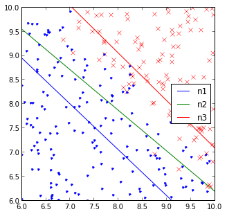

RESEARCH

My work with WebGL
My first project as a beginning programmer. I built a 3D graphics engine from scratch using
webGL. I also used codemirror to allow the user to change the Javascript code to
program their own 3D worlds.

My blog about scientific computation:
Some chaos theory. Some physics. Some statistics. These are the things that I do in my spare time.

Here's a list of some of the projects I have been working on for the last few years.
One can also explore my github account to see more.
My notes from Andrew Ng's Machine Learning Class:
Some chaos theory. Some physics. Some statistics. These are the things that I do in my spare time.

chuphay@gmail.com